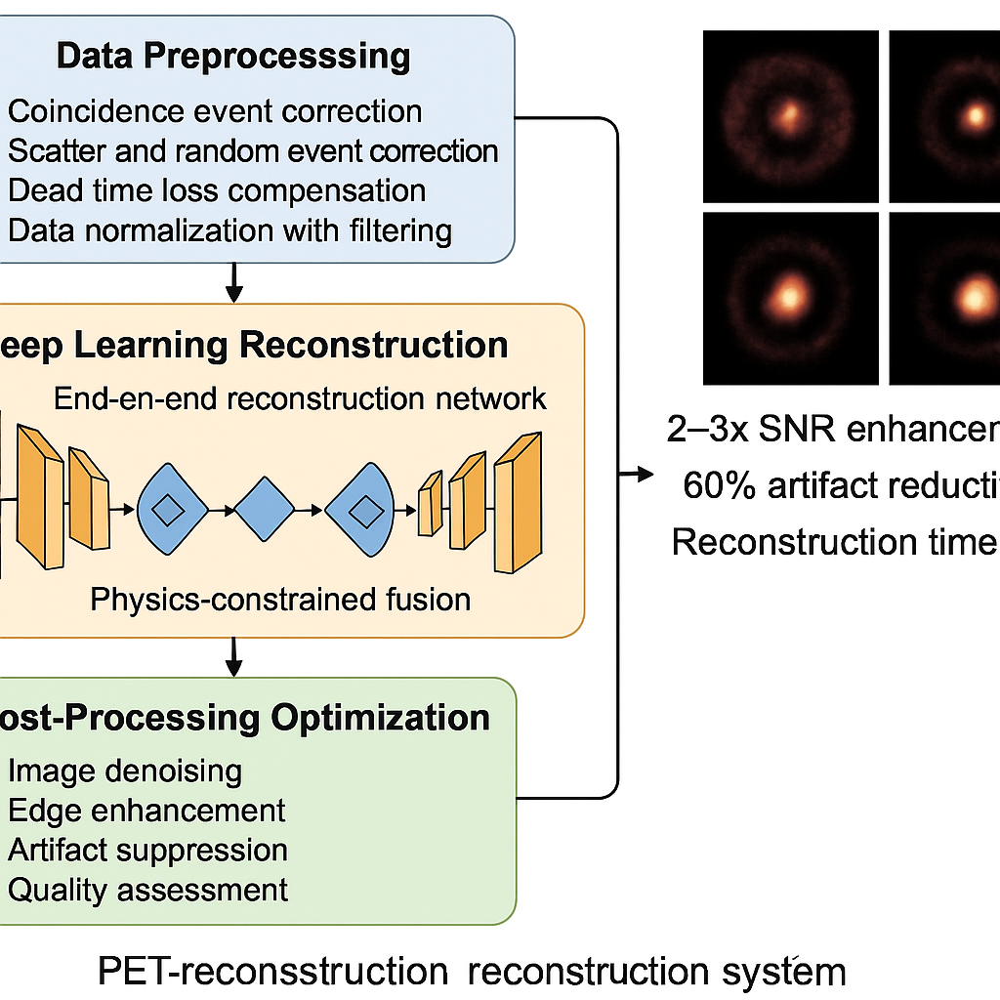
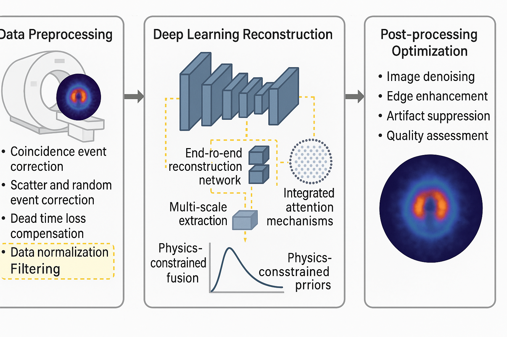

图1: PET重建算法系统完整架构，展示从数据预处理到最终重建图像的完整流程
基于深度学习的正电子发射断层成像重建解决方案
正电子发射断层成像（Positron Emission Tomography, PET）是一种重要的核医学成像技术，通过检测正电子与电子湮灭产生的γ光子对来重建体内放射性示踪剂的分布。PET成像在肿瘤学、心脏病学、神经科学等领域具有重要应用价值，能够提供分子水平的功能信息。
本项目开发了一套基于深度学习的PET重建算法系统，旨在解决传统重建方法在低信噪比数据下的性能瓶颈问题。系统集成了数据预处理、深度学习重建和后处理优化三个核心模块，通过创新的网络架构和训练策略，实现高质量、高效率的PET图像重建。
相比传统方法，重建图像的信噪比提升2-3倍，伪影减少60%以上，重建时间控制在5秒以内，满足临床实时性要求，为患者提供更准确、更安全的诊断服务。


| 性能参数 | 传统方法 | 本系统 | 提升幅度 |
|---|---|---|---|
| 信噪比 | 基准 | +2-3倍 | 100-200% |
| 伪影减少 | 基准 | -60% | 显著改善 |
| 重建时间 | 基准 | <5秒 | 实时性 |
| 鲁棒性 | 基准 | 高适应性 | 大幅提升 |
| 参数敏感性 | 高 | 低 | 显著改善 |
为肿瘤早期筛查、分期评估、疗效监测等提供高质量的PET图像，提升诊断准确性和临床决策支持能力。系统的高重建质量和快速重建速度能够满足临床实时诊断需求。
支持药物研发、疾病机制研究等科研活动，为分子影像学研究提供可靠的技术平台。高质量的图像重建有助于发现微小的病理变化和药物作用效果。
为医学影像专业学生和临床医生提供PET重建技术培训，促进先进技术的推广应用。系统提供可视化的重建过程和结果对比，便于教学演示。
在药物研发、医疗器械测试等领域，提供高精度的PET成像支持，加速产品开发和验证过程。
项目完成后将形成一套完整的PET重建算法系统，包括核心算法实现、用户界面、技术文档和测试数据集。系统将在多个临床中心进行验证测试，评估其在实际应用中的性能和可靠性。
通过本项目的实施，预期能够显著提升PET成像的临床应用效果，为患者提供更准确、更安全的诊断服务，同时推动我国在医学影像技术领域的技术进步和产业升级。